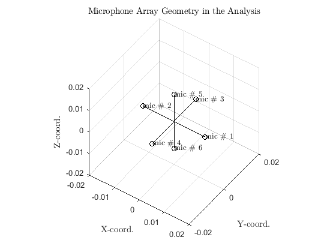
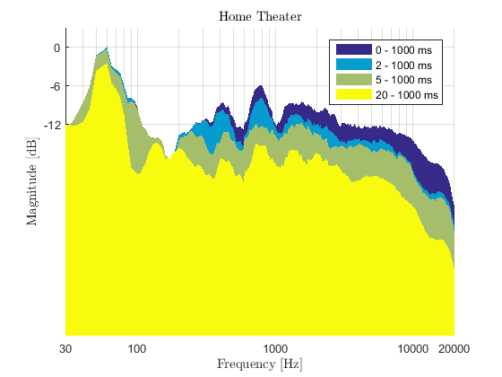
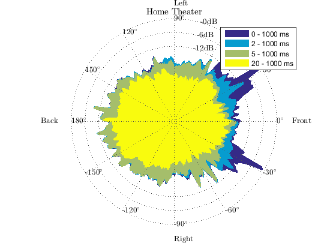
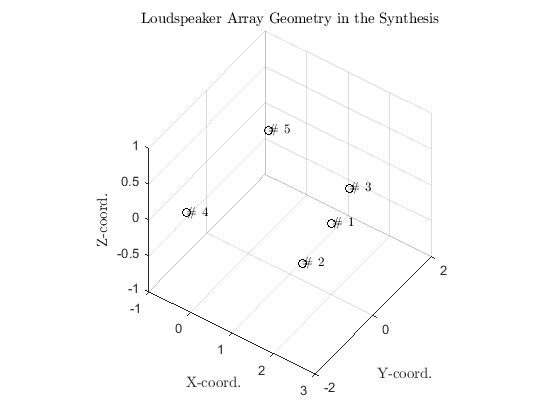

Contents
- Example usage of SDM toolbox for analysis, synthesis, and multi-channel reproduction.
- Load the impulse response and the source signal
- Read the data
- Create SDM struct for analysis with a set of parameters
- Calculate the SDM coefficients
- Create visualization struct with the given parameters
- Create a struct for visualization with a set of parameters
- Draw analysis parameters and impulse responses
- Draw time-frequency visualization
- Draw the spatiotemporal visualization
- Create synthesis struct with the given parameters
- Synthesize the spatial impulse response with NLS
- Convolution with the source signal
- Saving the auralization to a file
- Playback using Matlab or other applications
Example usage of SDM toolbox for analysis, synthesis, and multi-channel reproduction.
The data are room impulse responses from left and right channel of a a home theater system.
% SDM toolbox : demoCustomSetups % Sakari Tervo & Jukka Pätynen, Aalto University, 2016 % Sakari.Tervo@aalto.fi and Jukka.Patynen@aalto.fi
Load the impulse response and the source signal
1s long impulse response measured at 192 kHz IRs contains left and right channels loudspeakers are large size active loudspeakers ( Genelec something ) Distance to loudspeakers about > 2 meters
% Download a spatial room impulse response ir_filename = 'IR_another_living_room'; if ~exist([ir_filename '.mat'],'file') disp(['Downloading an example IR ' ir_filename ' from the database.']) url_ir = ['https://mediatech.aalto.fi/~tervos/' ir_filename '.mat']; websave([ir_filename '.mat'],url_ir); end % Download a stereofile (originally from free music archive) audio_filename = 'paper_navy_swan_song'; if ~exist([audio_filename ,'.mp3'],'file') disp('Downloading an example music file from free music archive.') url_of_the_song = 'https://mediatech.aalto.fi/~tervos/demoJAES/samples/Song1_CR1.mp3'; outfilename = websave([audio_filename '.mp3'],url_of_the_song); end % If websave not supported, you have to download IRs and source signals % manually from the urls given below % 'https://mediatech.aalto.fi/~tervos/IR_another_living_room.mat' % 'https://mediatech.aalto.fi/~tervos/demoJAES/samples/Song1_CR1.mp3'
Downloading an example IR IR_another_living_room from the database.
Read the data
Read impulse response
load([ir_filename '.mat']) % Read stereo signal S = audioread([audio_filename '.mp3']);
Create SDM struct for analysis with a set of parameters
Parameters required for the calculation load default values for all parameters Set your own values for some parameters
Radius = 0.025/2; % Radius of the microphones [m] micArray = ... % Microphone positions in Cartesian coordinates [m] [Radius 0 0; -Radius 0 0; 0 Radius 0; 0 -Radius 0; 0 0 Radius; 0 0 -Radius]; c = 345; % Assumed speed of sound [m/s] fs = 192e3; % Sampling frequency [Hz] winLen = 0; % Use the minimum frame size [samples] parframes = 2^14; % Number of parallel frames in the processing [.] showMicArray = true;% Show the applied microphone array geometry a = createSDMStruct('micLocs',micArray,'winLen',winLen,... 'c',c,'fs',fs,'parFrames',parframes,... 'showArray',showMicArray); % struct a can also be modified later for other parameters
User-defined SDM Settings are used :
fs: 192000
c: 345
winLen: 0
parFrames: 16384
showArray: 1
micLocs: [6x3 double]
Calculate the SDM coefficients
Solve the DOA of each time window assuming wide band reflections, white noise in the sensors and far-field (plane wave propagation model inside the array)
DOA{1} = SDMPar(ir_left, a);
% Here we are using the top-most microphone as the estimate for the
% pressure in the center of the array
P{1} = ir_left(:,5);
% Same for right channel
a.showArray = false; % Don't show the microphone array again
DOA{2} = SDMPar(ir_right, a);
P{2} = ir_right(:,5);
Started SDM processing Using frame size 36 Ended SDM processing in 5.9826 seconds. Started SDM processing Using frame size 36 Ended SDM processing in 5.7805 seconds.
Create visualization struct with the given parameters
plane = 'lateral'; % visualization plane DOI = 'backward'; % direction of integration plotStyle = 'fill'; % plotting style, fill or line name = 'Home Theater'; % title res = 1; % DOA resolution of the polar response t = [0 2 5 20]; % time indices of interest colors = parula(length(t)); % colormap dBSpacing = -12:6:0; % resolution of the dB grid DOASpacing = 30; % resolution of the DOA grid lw = zeros(size(t)); % no line showGrid = true; % grid in the visualization dBDynamics = 42; % dynamics in dB
Create a struct for visualization with a set of parameters
v = createVisualizationStruct('fs',fs,... 'Plane',plane,'DOI',DOI,'name',name,'res',res,... 'dBSpacing',dBSpacing,'Colors',colors,'DOASpacing',DOASpacing,... 'linewidth',lw,'Showgrid',showGrid,'PlotStyle',plotStyle,... 't',t); % Load default values % struct v can also be modified later for other parameters % e.g. v.t = [0 5 10 200] % For visualization purposes, set the text interpreter to latex set(0,'DefaultTextInterpreter','latex')
createVisualizationStruct : User-defined visualization settings are used :
fs: 192000
plane: 'lateral'
DOI: 'backward'
plotStyle: 'fill'
name: 'Home Theater'
res: 1
t: [0 2 5 20]
colors: [4x3 double]
dBSpacing: [-12 -6 0]
DOASpacing: 30
dBDynamics: 45
linewidth: [0 0 0 0]
showGrid: 1
smoothMethod: 'average'
smoothRes: 3
Draw analysis parameters and impulse responses
parameterVisualization(P, v);
Started visualization of parameters. Ended visualization of parameters in 0.16714 seconds.

Draw time-frequency visualization
Drawing only the lateral plane
timeFrequencyVisualization(P, v)
Started time-frequency visualization. Ended time-frequency visualization in 7.2408 seconds.
Draw the spatiotemporal visualization
spatioTemporalVisualization(P, DOA, v)
Started spatio-temporal visualization. Ended spatio-temporal visualization in 2.3151 seconds.
Create synthesis struct with the given parameters
Using 5.0 loudpseaker setup with uneven distance for the loudspeakers
lspLocs(:,1:2) = ... [0 0 -30 0 +30 0 -110 0 +110 0]; lspLocs(:,3) = [2 2.5 2 1.5 1.5]; % Distances are not equal s = createSynthesisStruct('lspLocs',lspLocs,'snfft',length(P{1}) ,... 'ShowArray',true,'fs',fs,'c',343,... 'LFEchannel',[]); % struct s can also be modified later for other parameters
createSynthesisStruct: No LFE channel
createSynthesisStruct: User-defined settings are :
fs: 192000
c: 343
dimensionality: 3
snfft: 192000
showArray: 1
Radius: 2
LFEcutOff: 80
Binaural: 0
HRTFset: 3
g: [384000x10 double]
f1: [10x1 double]
Blp: [2.2371e-09 6.7112e-09 6.7112e-09 2.2371e-09]
Alp: [1 -2.9948 2.9895 -0.9948]
Bhp: [0.9974 -2.9922 2.9922 -0.9974]
Ahp: [1 -2.9948 2.9895 -0.9948]
lspLocs: [5x3 double]
LFEchannel: []
Synthesize the spatial impulse response with NLS
H = cell(1,2); for channel = 1:2 H{channel} = synthesizeSDMCoeffs(P{channel},DOA{channel}, s); s.showArray = false; % Don't show the loudspeaker array again end
Started synthesizing equalizeNLS: processing frame : 1000 equalizeNLS: processing frame : 1000 equalizeNLS: processing frame : 2000 equalizeNLS: processing frame : 3000 Ended synthesizing in 5.0347 seconds. Started synthesizing equalizeNLS: processing frame : 1000 equalizeNLS: processing frame : 1000 equalizeNLS: processing frame : 2000 equalizeNLS: processing frame : 3000 Ended synthesizing in 4.7818 seconds.
Convolution with the source signal
Choose 10 seconds and resample
Sr = resample(S(1:44.e3*10,:),480,441); numOfLsp = size(s.lspLocs,1); Y = zeros(size(Sr,1),numOfLsp); % Resample H to 48e3 [Hz] sampling frequency for auralization H{1} = resample(H{1},1,4); H{2} = resample(H{2},1,4); for channel = 1:2; for lsp = 1:numOfLsp % Convolution with Matlab's overlap-add Y(:,lsp) = Y(:,lsp) + fftfilt(H{channel}(:,lsp),Sr(:,channel)); end end % Y contains the auralization of the spatial IRs with S
Saving the auralization to a file
Save the file to the default folder with a custom filename. Save the result as wav, as wav can handle upto 256 channels.
disp('Started Auralization');tic savename = [ir_filename '_' audio_filename '.wav']; if max(abs(Y(:))) > 1 Y = Y/max(abs(Y(:)))*.9; disp('Sound normalized, since otherwise would have clipped') end disp(['Ended Auralization in ' num2str(toc) ' seconds.']) disp('Started writing the auralization wav file') disp([savename ' on the disk.']);tic audiowrite(savename,Y,s.fs/4) info = audioinfo(savename); disp('Wrote ... '); disp(info) disp(['... in ' num2str(toc) ' seconds'])
Started Auralization
Sound normalized, since otherwise would have clipped
Ended Auralization in 0.021173 seconds.
Started writing the auralization wav file
IR_another_living_room_paper_navy_swan_song.wav on the disk.
Wrote ...
Filename: 'C:\Users\tervos\Desktop\SDMtoolbox\release\IR_anot...'
CompressionMethod: 'Uncompressed'
NumChannels: 5
SampleRate: 48000
TotalSamples: 478912
Duration: 9.9773
Title: []
Comment: []
Artist: []
BitsPerSample: 16
... in 0.10532 seconds
Playback using Matlab or other applications
% <--- EOF demoBinauralRendering.m